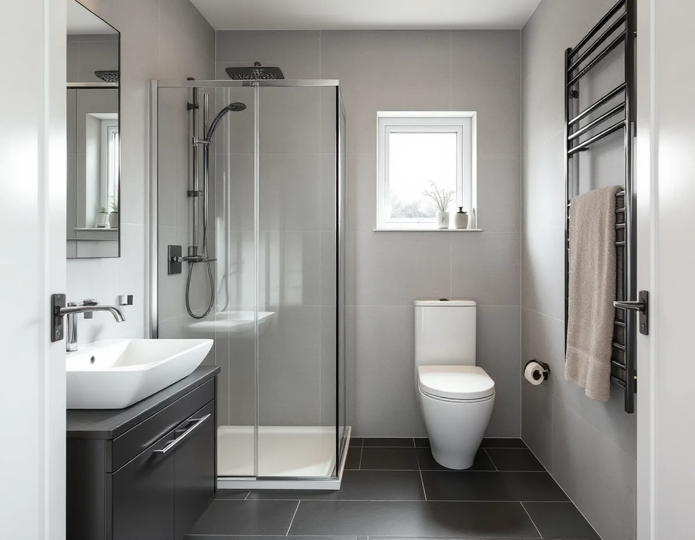
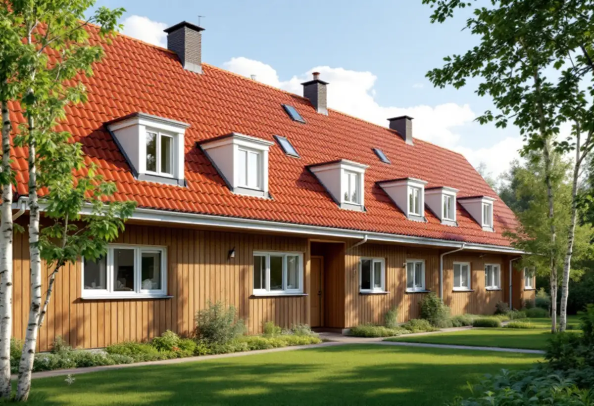

Genomgång på plats
Vi ser badrummet, var rören och frånluften går och vad grannväggen är byggd av.
En badrumsrenovering i Täby handlar oftast om ett våtrum i ett radhus eller grupphus från efterkrigstiden, eller om ett badrum som ska in i en äldre villa längs Roslagsbanan. Vi river, bygger upp underlaget, lägger tätskikt och ytskikt och samordnar VVS och el med behöriga installatörer – en kontakt för hela jobbet.

Täbys villor kom i vågor längs Roslagsbanan. I Roslags-Näsby byggdes ett åttiotal villor mellan 1907 och 1920, i Viggbyholm började tomter styckas av när hållplatsen öppnade 1903 och i Täby villastad vid kyrkbyn stod omkring 250 villor klara fram till första världskriget. I de husen var badrummet inte en del av ursprungsplanen. Det har byggts in senare, ibland flera gånger, och varje omgång kan ha lämnat ett nytt lager golv eller en ny rördragning efter sig.
Efter kriget kom grupphusen. Norskogen i Näsbypark byggdes 1957–59, och i Täby kyrkby uppfördes radhusområdena Midgård 1972–73 och Miklagård 1975–76. Gribbylund, där marken först styckades till sommarstugetomter, består i dag mest av typhus från 1970- och 1980-talen. Här är huset byggt med badrum från början, och ett våtrum som inte gjorts om kan vara lika gammalt som huset. Då är det tätskiktet, inte kaklet, som avgör om det är dags.

I en radhuslänga kan ditt badrum ligga vägg i vägg med grannens, med bara den skiljande väggen emellan. Det ställer två krav. Tätskiktet på den väggen måste vara helt, eftersom en läcka där kan bli grannens problem. Och rivning, bilning och kapning hörs genom hela längan, så det är klokt att prata med grannarna i förväg om när de bullriga dagarna kommer.
Samma planlösning i hela längan har en fördel: vet vi var avlopp och frånluft går i ett hus är det ofta likadant i nästa. Ett nytt duschhörn eller en flyttad toalett ska ändå anslutas till de ledningar som finns, och ligger huset i en samfällighet eller en förening behöver du ta reda på vem som äger vilka delar innan något ändras.
Är radhuset en bostadsrätt gäller bostadsrättslagen. Styrelsen ska ge tillstånd innan ledningar för vatten och avlopp eller ventilationen ändras, och innan någon gör ingrepp i bärande konstruktion.
I en villa från Täbys första villaepok sitter badrummet ofta på en plats som inte var tänkt för vatten. Vi river ner till stommen för att se bjälklag, väggar och rör, och bygger sedan upp ett underlag som tål tätskikt och klinker. Golvet får fall mot en golvbrunn, och väggarna kläs med skivor som är gjorda för våtrum.
Branschorganisationen GVK uppdaterade sina regler för tätskikt, Säkra Våtrum, den 1 januari 2026, och Byggkeramikrådet har motsvarande regler för plattsatta våtrum. Fråga vilka regler arbetet utförs efter och be att få egenkontrollen för tätskiktet när det är klart. Vad du i övrigt bör få på papper står på sidan om badrumsrenovering.
Många i Täby vill ha ett andra badrum, och det kan hamna i en tillbyggnad eller i ett komplementbostadshus på tomten. Sedan den 1 december 2025 är ett sådant hus bygglovsbefriat om det är högst 30 kvadratmeter och 4 meter högt inom detaljplan, och alla lovfria komplementbyggnader på tomten får tillsammans vara högst 45 kvadratmeter. Täby kommun påpekar att en anmälan och ett startbesked kan krävas när vatten och avlopp installeras i byggnaden, och Boverket beskriver samma sak: själva huset kräver ingen anmälan, men installationerna gör det.
Ligger fastigheten i ett kulturhistoriskt särskilt värdefullt område krävs bygglov även för det som annars är lovfritt. Mer om reglerna finns under attefallshus och tillbyggnad.
Vi ser badrummet, var rören och frånluften går och vad grannväggen är byggd av.
I bostadsrätt eller samfällighet tar vi reda på vad som behöver godkännas innan start.
Du får ett skriftligt förslag med arbete och material på egna rader, så ROT-avdraget syns.
Rummet rivs ner till stommen, och rör, golvbrunn och bjälklag bedöms med golvet öppet.
Golv med fall, våtrumsskivor och tätskikt monteras; installatörerna drar rör och el.
Kakel, klinker och porslin på plats, och du får dokumentationen över tätskiktet.
Du kan få rotavdrag med 30 procent av arbetskostnaden, högst 50 000 kronor per person och år och högst 75 000 kronor tillsammans med rutavdrag. Avdraget gäller arbetet, inte materialet, och vi drar det direkt på fakturan. Äger ni huset tillsammans har var och en sitt eget utrymme.
Ett badrum i ett nytt fristående gästhus ger enligt Skatteverket inget rotavdrag, eftersom avdraget inte gäller nybyggnad av en fristående byggnad. Ett badrum i en tillbyggnad som sitter ihop med huset kan däremot omfattas, om huset är äldre än fem år.
Storleken på rummet spelar mindre roll än man tror. Det som brukar avgöra är om toalett, dusch och golvbrunn ligger kvar eller flyttas, hur mycket av underlaget som behöver byggas om och vilka ytskikt du väljer. I ett nytt gästhus tillkommer dragning av vatten och avlopp från huvudbyggnaden. Besöket är gratis och du får ett skriftligt kostnadsförslag.
Tätskikt, golvbrunn, el, VVS och intyg.
Badrumsrenovering i Stockholm →Takbyte, takbesiktning och plåtarbeten.
Takläggare i Täby →Näsbypark, Viggbyholm och Gribbylund.
Takrenovering i Täby →